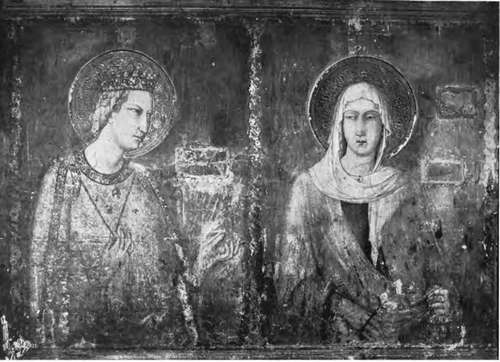

Historical Sketch. Part 7
Description
This section is from the book "Mural Painting", by F. Hamilton Jackson. Also available from Amazon: Mural Painting: -1904.
Historical Sketch. Part 7
Leonardo da Vinci's only wall-painting, the Last Supper, is such a wreck, owing partly of its having been painted in oil and partly to subsequent re-paintings, that the influence he exercised over his pupils and followers is perhaps a better way of judging his eminence than by reference to a work of which only the excellent composition remains. The most eminent of them were Bernardino Luini, Cesare da Sesto, Giovanni Antonio Boltraffio, Marco da Oggiono, Andrea Salaino, Giovanni Pedrini, Sodoma and Gau-denzio Ferrari In S. Maurizio, Milan, called the Monastero Maggiore, a church which is divided into nuns' choir and public church, the frescoes on the dividing wall are by Luini, while in the nuns' choir, which is decorated in charming taste and pretty fully painted, he was assisted by Boltraffio and Borgognone. Other frescoes are in the picture-galleries of the Brera; but his most important works are at Saronno (1525), where Gaudenzio Ferrari, Lanini, and Cesare da Sesto also worked, and at Lugano, where on the piers and in the chapels of S. Maria degli Angeli, and on the high wall above the chancel arch, are very celebrated frescoes. The large fresco, which contains several hundred figures, represents the Passion of Christ, and is probably his masterpiece (1529). Gaudenzio Ferrari (1484-1549) worked at Milan, Novara, the Sacro Monte of Varallo, at Saronno as before mentioned, and at Vercelli. His pictures show great power and naturalism but little interest. Giovanni Antonio Bazzi, called " II Sodoma," was born at Vercelli in 1477. He was an unequal painter, but possessed of great talent and sometimes succeeded so well as to challenge comparison with the greatest names. His beautiful S. Sebastian in the Uffizi at Florence has never been surpassed. This is in oil, but his frescoes at Monte Oliveto are many of them of great excellence, and other frescoes of his may be seen at S. Domenico Siena (in the chapel of S. Catherine), and in the Palazzo Pubblico of that city, in which he established himself in 1501. He died in 1549.
Wall-painting by Taddeo Gaddi. Lower Church of S. Francesco, Assisi.
Antonio Allegri, called Correggio (1494-1534), was the discoverer of the scenic light and shade which finally destroyed the sense of style in Italian decoration. From a technical point of view he may be said to represent the final development of Italian oil painting. He aimed at absolute realism and the annihilation of the surface upon which the painting was executed, and often attained considerable success, the arrangement of the composition being purely picturesque and aerial perspective being used to assist the illusion. He settled at Parma in 1518, and there may be seen perhaps the most charming of his works in fresco, the Camera di S. Paolo in the abolished Benedictine convent, children peeping through oval openings in a trellis of greenery, painted in that year. The cupola of the cathedral was painted between 1526 and 1530, and there are several other frescoes of his in the city executed between 1518 and 1530.
The earlier Venetians worked very little in fresco, and though there are remains in Venice of Giorgione's work and some fragments ascribed to Titian, whose frescoes in the Scuola del Santo and Scuola del Carmine at Padua are much admired, the names of Venetian fresco painters are most of them of later date. Giovanni Antonio Pordenone (1483-1539) painted at Castel Colalto, Villanuova, Treviso, and other places, and there are some remains of his work in the cloister of S. Stefano, Venice. Girolamo Bomanino of Brescia (1485-1566) painted in the cathedral at Cremona and in the bishop's palace at Trent, and to him are ascribed some of the frescoes in Colleoni's castle of Malpaga. But Paolo Veronese (1528-1586) in his frescoes at Castelfranco, at Villa Fanzolo, and other places near, and at the Villa Barbara at Maser especially, equals in decorative effect the best masters. Here variety of subject—mythological scenes on the ceiling alternating with allegorical figures and mountain landscapes on the walls, and balustrades arranged as friezes, on which well-dressed Venetians of both sexes lean— makes a very pleasant decoration, and the excellent preservation of the pictures enables one to gain a good idea of the surroundings amid which the Venetian patrician enjoyed his country life.
The masters of the decadence are scarcely worth attention; their enormous works are generally uninteresting, nor is there much to be learnt from their mannered technique. The Caracci and their pupils aimed at an eclecticism which should unite the merits of all schools (even those contradictory to each other) founded on naturalism, and Domenichino and Guido Reni did sometimes produce works which were really fine, such as the well-known Aurora by the latter in the Rospigliosi palace at Rome; but dexterity of manipulation and cleverness of drawing have supplanted the fine style and dignified treatment of the best periods in most cases. Tiepolo the Venetian (died 1770) is an instance of this great dexterity, coupled with considerable feeling for picturesque composition, but Luca Giordano, called "Fa presto" because he was so rapid (1632-1705), surpassed him in this direction. His compositions show considerable feeling for colour, and at Naples may be seen frescoes which he finished in two or three days. Armenino, in his True Precepts for Painting, gives a curious account of the dexterity of Luca Cambiasi, one of the later Genoese painters, who must have surpassed even Luca Giordano in rapidity, one would think: "A certain Luchetto of Genoa, who painted in S. Matteo some histories of the saint in competition with another painter of Bergamo, a very worthy man. ... I saw wonderful things of his; he painted with both hands, holding a brushful of colour in each, and he was very expert and determined and did his work with incredible rapidity." Modern naturalism, in the strict sense of the word, took its rise with Caravaggio (1569-1609), who was followed by Ribera (1588-1656), but these men principally painted in <5il, and in their easel pictures the exaggerated light and shade and black shadows are not so unpleasing as they would be in fresco.
Continue to: